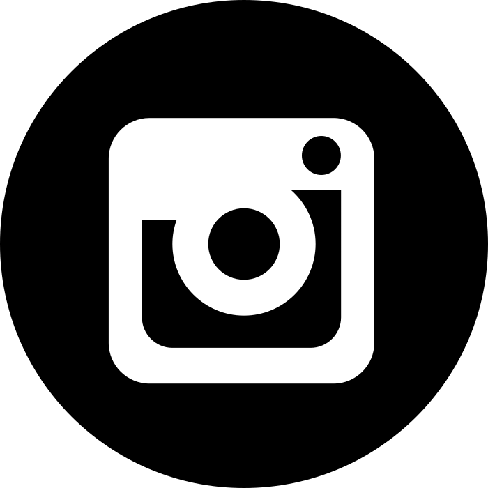
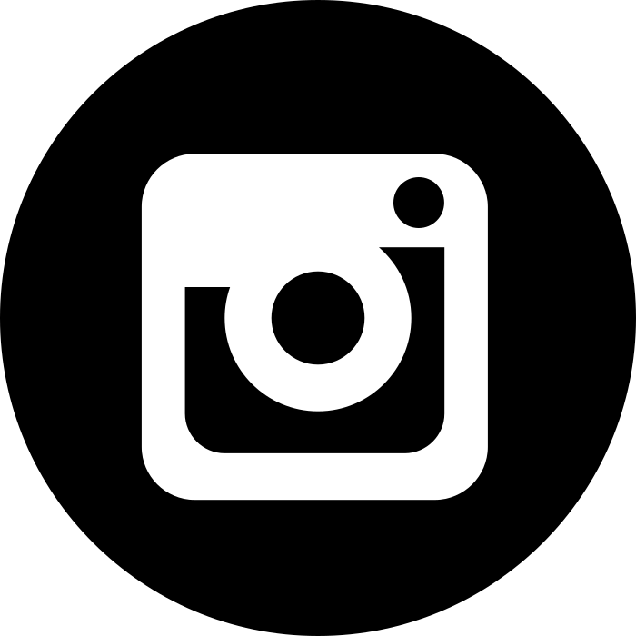

Even Mad Men Love Their Mamas
Even Mad Men Love their Mamas é uma adaptação do filme We Need to Talk About Kevin (Lynne Ramsay, 2011). Esta ficção surge
sob a forma de máscaras, project room, filme, série fotográfica e publicação multivolume. A saúde mental é algo presente no quotidiano e deve ser tratada com a naturalidade que a
caracteriza, diariamente.
O sonho de normalizar as doenças mentais, de as assumir, de as legitimar… é, em si, uma ficção.
Even Mad Men Love Their Mamas tem como ponto de partida a premissa “e se os transtornos psicológicos fossem visíveis?”. A partir de um bestiário constituído
por quatro distúrbios mentais – a psicopatia, a esquizofrenia, a bipolaridade e a depressão – o projeto critica, tanto a desvalorização dos cuidados médicos psicológicos e/ou
psiquiátricos, como a marginalização e discriminação exercida sobre as vítimas destas doenças. A experiência decorre da exposição da convivência das “bestas” com pessoas reais,
participantes involuntários do universo ficcional, e da encenação de certas situações referentes às dificuldades de integração destes sujeitos com a restante sociedade.
O conteúdo deste projeto foi produzido integralmente pelos quatro elementos do grupo, desde fotografia e vídeo, áudio, figurinos, texto, encenação, produção editorial, modelação 3d e
programação. Todo este processo foi documentado e reunido num manual de produção, que pode ser consultado a partir deste website, bem como todos os outros objetos.
FBAUL Licenciatura em Design de Comunicação
3.º ano Design de Comunicação VI 2021/22
 
